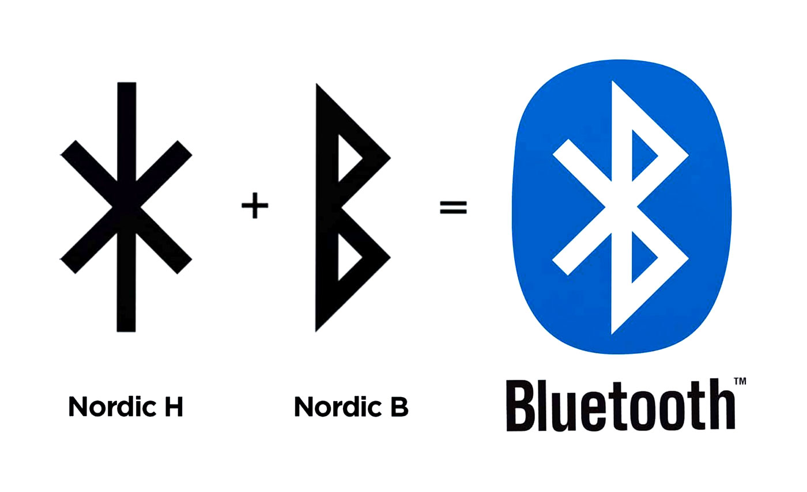

A Conexão Viking do Bluetooth
Provavelmente você usa a tecnologia Bluetooth todos os dias para conectar seus fones de ouvido, caixas de som ou o celular ao carro. Mas você já parou para pensar de onde surgiu esse nome tão peculiar ("Dente Azul") e por que o seu logotipo parece uma marca misteriosa? Acompanhe este artigo para descobrir a história fascinante que une a tecnologia moderna aos reis vikings.
A união das Gigantes Tech
Em 1997, um consórcio de grandes empresas de tecnologia, incluindo a Intel, a Ericsson e a Nokia, estava trabalhando para criar uma tecnologia de rádio de curto alcance de padrão único para conectar computadores, celulares e acessórios. Cada empresa tinha seu próprio codinome para o projeto, o que gerava confusão em reuniões. Foi aí que um engenheiro da Intel chamado Jim Kardach entrou em cena para propor uma solução.
Kardach estava conversando com um colega sueco sobre história e barcos vikings. Ele acabou lendo um livro sobre o assunto e sugeriu usar o nome de um famoso rei escandinavo como um codinome temporário, até que o departamento de marketing escolhesse um nome definitivo oficial.
Quem foi o Rei Harald?
O nome sugerido foi uma homenagem ao rei Harald Blåtand (cuja tradução para o inglês é Harald Bluetooth). Ele governou a Dinamarca e a Noruega no século X. O apelido "Blåtand" (Dente Azul) provavelmente se devia ao fato de ele ter um dente escuro ou azulado que já havia morrido, ou por gostar muito de comer mirtilos (blueberries). Ele ficou historicamente famoso por conseguir um feito incrível: unificar as tribos escandinavas que viviam em guerra.
A analogia de Kardach era brilhante: assim como o rei Harald unificou a Escandinávia, a nova tecnologia iria unificar os computadores, celulares e dispositivos móveis com um protocolo de comunicação sem fio universal. O nome temporário acabou colando tanto entre os desenvolvedores que o marketing nunca conseguiu encontrar um substituto à altura.
O Mistério das Runas no Logotipo
E o famoso logotipo azul que você vê na barra de status do seu celular? Ele não é apenas um "B" estilizado com traços geométricos. O símbolo é, na verdade, uma composição gráfica viking (conhecida como bind-rune) que une duas runas do alfabeto nórdico antigo (Futhorc). Foram unidas as iniciais do nome do rei: a runa Hagall (ᚼ), que representa a letra 'H', e a runa Bjarkan (ᛒ), que representa a letra 'B'.

Juntas, as runas ᚼ (Harald) e ᛒ (Bluetooth) formam o desenho exato do ícone de conexão que o mundo inteiro usa hoje. Uma marca milenar escondida bem na tela do seu smartphone de última geração.
Então é isso! Espero que você tenha gostado de descobrir a origem viking do Bluetooth que conecta o seu mundo todos os dias.